전기공사기사 (2015-09-20 기출문제)
1과목: 전기응용 및 공사재료
1. 사이리스터의 응용에 대한 설명으로 잘못된 것은?
- 위상제어에 의해 교류전력 제어가 가능하다.
- 교류 전원에서 가변 주파수의 교류변환이 가능하다.
- 직류 전력의 증폭인 컨버터가 가능하다.
- 위상제어에 의해 제어정류 즉, 교류를 가변 직류로 변환할 수 있다.
(정답률: 80%)

2. 내면이 완전확산 반사면으로 되어 있는 밀폐구 내에 광원을 두었을 때 그 면의 확산 조도는 어떻게 되는가?
- 광원의 형태에 의하여 변한다.
- 광원의 위치에 의하여 변한다.
- 광원의 배광에 의하여 변한다.
- 구의 지름에 의하여 변한다.
(정답률: 69%)
3. 알칼리 축전지의 양극으로 사용되는 것은?
- 이산화 납
- 아연
- 구리
- 수산화 니켈
(정답률: 75%)
4. 모노레일의 특징이 아닌 것은?
- 소음이 적다.
- 승차감이 좋다.
- 가속, 감속도를 크게 할 수 있다.
- 단위 차량의 수송력이 크다.
(정답률: 74%)
5. 바리스터의 주 용도는?
- 전압 증폭
- 진동 방지
- 과도 전압에 대한 회로 보호
- 전류 특성을 갖는 4단자 반도체 장치에 사용
(정답률: 77%)
6. 구리-콘스탄탄 열전대 측온접점에 400℃ 가해질 때 약 몇 mV의 열기전력이 발생하는가?
- 5
- 10
- 20
- 30
(정답률: 55%)
7. 전동기의 출력이 15kW, 속도 1800rpm으로 회전하고 있을 때 발생되는 토크[kg·m]는?
- 6.2
- 7.4
- 8.1
- 9.8
(정답률: 82%)
8. 전동기의 회생제동이란?
- 전동기의 기전력을 저항으로써 소비시키는 방법이다.
- 전동기에 붙인 제동화에 전자력으로 가압하는 방법이다.
- 전동기를 발전제동으로 하여 발생전력을 선로에 공급하는 방식이다.
- 와전류손으로 회전체의 에너지를 소비하는 방법이다.
(정답률: 83%)
9. MOSFET, BJT, GTO의 이점을 조합한 전력용 반도체 소자로서 대전력의 고속 스위칭이 가능한 소자는?
- 게이트 절연 양극성 트랜지스터
- MOS제어 사이리스터
- 금속 산화물 반도체 전계효과 트랜지스터
- 모놀리틱 달링톤
(정답률: 67%)
10. 상용 주파수를 사용할 수 있는 가열 방식은?
- 초음파 가열
- 유전 가열
- 저주파 유도 가열
- 마이크로파 유전 가열
(정답률: 64%)
11. 전선의 약호에서 CVV의 품명은?
- 인입용 비닐절연전선
- 0.6/1kV 비닐절연 비닐 캡타이어 케이블
- 0.6/1kV 비닐절연 비닐시스 케이블
- 0.6/1kV 비닐절연 비닐시스 제어 케이블
(정답률: 72%)
12. 분전함에 대한 설명으로 틀린 것은?
- 반의 옆쪽에 설치하는 분배전반의 소형덕트는 강판제로서 전선을 구부리거나 눌리지 않을 정도로 충분히 큰 것이어야 한다.
- 목제함은 최소두께 1.0cm(뚜껑포함)이상으로 불연성 물질을 안에 바른 것이어야 한다.
- 난연성 합성수지로 된 것은 두께 1.5mm 이상으로 내아크성인 것이어야 한다.
- 강판제의 것은 일반적인 경우 두께 1.2mm 이상이어야 한다.
(정답률: 74%)
13. 피뢰를 목적으로 피보호물 전체를 덮은 연속적인 망상 도체(금속판도 포함)는?
- 수평 도체
- 케이지(Cage)
- 인하 도체
- 용마루 가설 도체
(정답률: 86%)
14. 다음 중 1차 전지가 아닌 것은?
- 망간 건전지
- 공기 전지
- 알칼리 축전지
- 수은 전지
(정답률: 77%)
15. 전선을 지지하기 위하여 수용가측 설비에 부착하여 사용하는 “ㄱ”자형으로 생긴 형강은?
- 암타이 밴드
- 완금 밴드
- 경완금
- 인입용 완금
(정답률: 54%)
16. 절연재료의 구비 조건이 아닌 것은?
- 절연 저항이 클 것
- 유전체 손실이 클 것
- 절연 내력이 클 것
- 기계적 강도가 클 것
(정답률: 89%)
17. 터널 내의 배기가스 및 안개 등에 대한 투과력이 우수하여 터널조명, 교량 조명, 고속도로 인터체인지 등에 많이 사용되는 방전등은?
- 수은등
- 나트륨등
- 크세논등
- 메탈 할라이드등
(정답률: 89%)
18. 특고압 가공 전선로의 장주에 사용되는 완금의 표준규격[mm]이 아닌 것은?
- 1400
- 1800
- 2400
- 2700
(정답률: 84%)
19. 금속재료 중 용융점이 제일 높은 것은?
- 백금
- 이리듐
- 몰리브덴
- 텅스텐
(정답률: 58%)
20. 알칼리 축전지에서 소결식에 해당하는 초급방전형은?
- AM형
- AMH형
- AL형
- AH-S형
(정답률: 83%)
2과목: 전력공학
21. 송배전선로에서 전선의 수평장력을 2배로 하고 또 경간을 2배로 하면 전선의 이도는 처음보다 어떻게 되는가?
- 1/4배로 줄어든다.
- 1/2배로 줄어든다.
- 2배로 늘어난다.
- 4배로 늘어난다.
(정답률: 30%)
22. 경간이 200m인 철탑에 설치 높이가 같도록 가공전선을 가설할 때 이도(dip)는 약 몇 m인가? (단, 가공전선의 허용 인장하중은 1400kg, 안전율은 2.2, 전선 자체의 무게는 0.333 kg/m라고 한다.)
- 2.24
- 2.62
- 3.38
- 3.46
(정답률: 28%)
23. 이상전압의 파고값을 저감시켜 전력사용 설비를 보호하기 위하여 설치하는 것은?
- 피뢰기
- 초호환
- 계전기
- 접지봉
(정답률: 33%)
24. 가스터빈 발전의 장점은?
- 효율이 가장 높은 발전방식이다.
- 기동시간이 짧아 첨두부하용으로 사용하기 쉽다.
- 어떤 종류의 가스라도 연료로 사용이 가능하다.
- 장기간 운전해도 고장이 적으며, 발전 효율이 높다.
(정답률: 22%)
25. 수전단에 관련된 사항 중 틀린 것은?
- 중부하 시 수전단에 설치된 전력용 콘덴서를 투입한다.
- 중부하 시 수전단에 설치된 동기 조상기는 부족여자로 운전한다.
- 경부하시 수전단에 설치된 동기 조상기는 부족여자로 운전한다.
- 장거리 송전선로의 시충전 시 수전단 전압이 송전단 전압보다 높게 될 수 있다.
(정답률: 20%)
26. 피뢰기가 구비하여야 할 조건으로 거리가 먼 것은?
- 속류 차단 능력이 클 것
- 시간지연(time lag)이 적을 것
- 충격 방전개시 전압이 낮을 것
- 방전 내량이 크면서 제한 전압이 높을 것
(정답률: 27%)
27. 전력계통 안정도는 외란의 종류에 따라 구분되는데, 송전선로에서의 고장, 발전기 탈락과 같은 외란에 대한 전력 계통의 동기 운전 가능 여부로 판정되는 안정도는?
- 동태 안정도
- 정태 안정도
- 전압 안정도
- 과도 안정도
(정답률: 24%)
28. 그림과 같이 전력선과 통신선 사이에 차폐선을 설치하였다. 이 경우에 통신선의 차폐계수(K)를 구하는 관계식은? (단, 차폐선을 통신선에 근접하여 설치한다.)
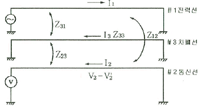
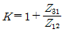
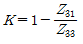
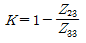
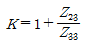
(정답률: 24%)
29. 수력 발전설비에 이용되는 차동조압 수조의 특징으로 옳은 것은?
- 수조에 수실을 설치하여 서징의 주기를 빠르게 한다.
- 수압 변동을 생기게 하는 에너지를 흡수하며, 탱크를 소형으로 할 수 있다.
- 수조에 제수공이 설치되어 있으므로 수로 내의 유수의 속도 변화가 없다.
- 수압관 내의 압력의 변동을 크게 하고, 수격작용을 완화시키는 효과가 있다.
(정답률: 17%)
30. 디지털형 계전기의 설명 중 틀린 것은?
- 가동 부분이 없으므로 보수가 용이하다.
- 동작이 고속이고 정정치 부근에서도 그 값이 변하지 않는다.
- 접점 손상의 문제가 없다.
- CT의 부담은 크나, PT의 부담이 작으므로 PT의 오차가 낮게 된다.
(정답률: 24%)
31. 전력 원선도에서 알 수 없는 것은?
- 송수전 할수 있는 최대전력
- 선로 손실
- 수전단 역률
- 코로나 손
(정답률: 32%)
32. 송전선로에서 1선 지락 고장 시 건전상의 대지전압 상승이 가장 큰 접지 방식은?
- 비접지 방식
- 직접접지 방식
- 저저항 접지 방식
- 고저항 접지방식
(정답률: 22%)
33. 1m의 하중이 0.37kg인 전선을 지지점이 수평인 경간 80m에 가설하여 이도를 0.8m로 하면 전선의 수평장력은 몇 kg인가?
- 350
- 360
- 370
- 380
(정답률: 29%)
34. 교류 발전기의 전압조정 장치로 속응 여자방식을 채택하는 이유로 틀린 것은?
- 전력 계통에 고장이 발생할 때 발전기의 동기화력을 증가시킨다.
- 송전 계통의 안정도를 높인다.
- 여자기의 전압 상승률을 크게 한다.
- 전압 조정용 탭의 수동변환을 원활히 하기 위함이다.
(정답률: 13%)
35. 고속증식 원자로의 구성재로 사용되지 않는 것은?
- 제어재
- 감속재
- 냉각재
- 반사재
(정답률: 16%)
36. 수전용 변전설비의 1차측 차단기의 차단용량은 주로 어느것에 의하여 정해지는가?
- 수전 계약용량
- 부하설비의 단락 용량
- 공급측 전원의 단락 용량
- 수전 전력의 역률과 부하율
(정답률: 26%)
37. 전력 계통을 연계시켜서 얻는 이득이 아닌 것은?
- 배후 전력이 커져서 단락 용량이 작아진다.
- 부하 증가시 종합첨두 부하가 저감된다.
- 공급 예비력이 절감된다.
- 공급 신뢰도고 향상된다.
(정답률: 27%)
38. 다음 중 그 값이 1 이상인 것은?
- 부등률
- 부하율
- 수용률
- 전압 강하율
(정답률: 33%)
39. 3상 3선식 배전선로에 역률 0.8, 출력 120kW인 3상 평형 유도부하가 접속되어 있다. 부하단의 수전 전압이 3000V이고 배전선 1선의 저항이 6Ω, 리액턴스가 4Ω이라면 송전단 전압은 몇 V인가?
- 3120
- 3240
- 3360
- 3480
(정답률: 20%)
40. 배전선로의 고장전류를 차단할 수 있는 것으로 가장 알맞은 전력 개폐장치는?
- 단로기
- 구분 개폐기
- 선로 개폐기
- 차단기
(정답률: 29%)
3과목: 전기기기
41. 100kW, 4극, 3300V, 주파수 60Hz의 3상 유도 전동기의 효율이 92%, 역률이 90%일 때 입력은 약 몇 kVA인가?
- 101.1
- 110.2
- 120.8
- 130.8
(정답률: 23%)
42. 일반 변압기의 여자에 필요한 피상전력은? (단, f는 주파수, μ는 투자율, Bm은 최대자속밀도, Vc는 철심의 부피이다.)
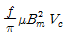
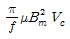
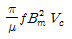
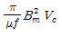
(정답률: 22%)
43. 반발 기동형 단상 유도전동기에 관한 설명으로 틀린 것은?
- 기동 토크가 크다.
- 정류자가 필요하다.
- 회전자는 권선형이다.
- 기동시 유도 전동기의 특성을 갖는다.
(정답률: 13%)
44. 동기 전동기가 유도 전동기에 비하여 우수한 점은?
- 기동 특성이 양호하다.
- 전부하 효율이 양호하다.
- 속도제어가 자유롭다.
- 구조가 간단하다.
(정답률: 20%)
45. 돌극형 동기 발전기에서 직축 동기리액턴스를 Xd, 횡축 동기 리액턴스를 Xq라 할때의 관계는?
- Xd＜ Xq
- Xd > Xq
- Xd = Xq
- Xd ≪ Xq
(정답률: 28%)
46. 교류 전력에 의한 전자유도 작용을 이용한 기기는 어느 것인가?
- 정류기
- 충전기
- 여자기
- 변압기
(정답률: 21%)
47. 3상 유도전동기의 제5차 고조파에 의한 기자력의 회전방향 및 회전 속도가 기본파 회전자계에 대한 관계는?
- 기본파와 같은 방향이고 5배의 속도
- 기본파와 역방향이고 5배의 속도
- 기본파와 같은 방향이고 1/5의 속도
- 기본파와 역방향이고 1/5의 속도
(정답률: 14%)
48. 4극, 60Hz 3상 유도 전동기가 있다. 회전자도 3상이고 회전자가 정지할 때 2차 1상간의 전압이 200V이다. 이 전동기를 정상 상태에서 1760rpm으로 회전시킬 때 2차 전압은 약 몇 V인가?
- 4
- 15
- 26
- 34
(정답률: 23%)
49. 정격용량 10kVA, 전압 2000/100V의 변압기를 60Hz로 시험하여 Z1=6.2+j7.0Ω으로 결과값을 얻었다. 이때 틀린 것은? (단, Z1은 1차측으로 환산한 1차, 2차의 합계 임피던스이다.)
- 정격전압을 가하였을 때의 단락전류 = 213.9A
- 저항 강하율 = 1.55%
- 리액턴스 강하율 = 1.85%
- 임피던스 강하율 = 2.34%
(정답률: 25%)
50. 극수 P1, P2의 두 3상 유도 전동기를 종속접속 하였을 때의 이 전동기의 동기속도는?(단, 전원 주파수는 f1이고 직렬 종속이다.)
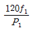
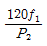
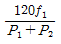
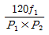
(정답률: 34%)
51. 변압기의 단락시험으로 측정할 수 없는 항목은?
- 동손
- 임피던스 와트
- 임피던스 전압
- 철손
(정답률: 24%)
52. 전기자 전류가 I[A], 역률이 cosθ인 돌극형 동기 발전기에서 횡축 반작용의 전류 성분은?
- I/cosθ
- I/sinθ
- Icosθ
- Isinθ
(정답률: 18%)
53. 단상 유도전동기 중 기동 토크가 가장 큰 것은?
- 콘덴서 기동형
- 반발 기동형
- 분상 기동형
- 셰이딩 코일형
(정답률: 33%)
54. 직류 직권 전동기에서 단자 전압이 일정할 때 부하 토크가 1/2이 되면 부하전류는? (단, 계자 회로는 포화되지 않았다고 한다.)
- 2배로 증가
- 1/2배로 감소
- 1/√2배로 감소
- √2배로 증가
(정답률: 18%)
55. 다이오드를 사용한 정류회로에서 여러 개를 직렬로 연결하여 사용할 경우 얻는 효과는?
- 다이오드를 과전류로부터 보호
- 다이오드를 과전압으로부터 보호
- 부하출력의 맥동률 감소
- 정류회로의 출력전류 증가
(정답률: 27%)
56. 동기 발전기에서 유기 기전력과 전기자 전류가 동상인 경우의 전기자 반작용은?
- 교차자화 작용
- 증자 작용
- 감자 작용
- 직축 반작용
(정답률: 27%)
57. 직류 직권 전동기에 대한 설명으로 틀린 것은?
- 직권 전동기는 전기자 권선과 계자 권선이 직렬로 되어 있다.
- 전기자 전류, 계자 전류 및 부하전류의 크기는 동일하다.
- 부하 전류의 증감에 따라서 자속은 변하지 않는다.
- 부하전류가 변하면 속도가 변한다.
(정답률: 30%)
58. SCR이 턴 오프(turn-off)되는 조건은?
- 게이트에 역방향 전류를 흘린다.
- 게이트에 역방향의 전압을 인가한다.
- 게이트의 순방향 전류를 0으로 한다.
- 애노드 전류를 유지전류 이하로 한다.
(정답률: 23%)
59. 50Hz, 6.3kV/210V, 50kVA, 정격역률 0.8(지상)의 단상 변압기에 있어서 무부하손은 0.65%, %저항강하는 1.4%라 하면 이 변압기의 전부하 효율(%)는 약 얼마인가?
- 96.5
- 97.7
- 98.6
- 99.4
(정답률: 17%)
60. 보호 계전기의 동작 구조별 분류에서 가동 코일형 계전기의 특성은?
- 교류에 사용한다.
- 동작 값과 복귀 값의 차이가 크다 .
- 동작 시간 정정 변경이 어렵다.
- 토크 발생 효율이 낮아 접점 압력이 적다.
(정답률: 15%)
4과목: 회로이론 및 제어공학
61. 회로망의 전달함수
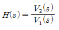
를 구하면?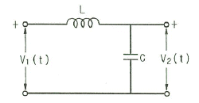
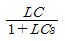
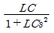
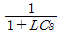
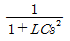
(정답률: 24%)
62. t=0에서 스위치 K를 닫았다. 이 회로의 완전응답 i(t)는? (단, 커패시턴스 C는 그림의 극성으로 V/2의 초기 전압을 갖고 있었다.)
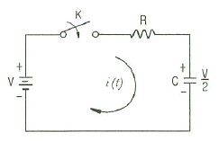
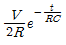
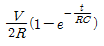
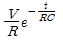
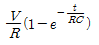
(정답률: 19%)
63. 저항 R=50Ω과 용량 리액턴스
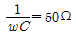
인 콘덴서가 직렬로 연결된 회로에 100V의 교류 전압을 인가할 때, 이 회로의 임피던스 Z[Ω]와 전압, 전류의 위상차 θ는?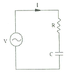
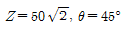
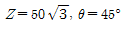
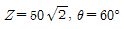
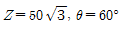
(정답률: 24%)
64. 그림과 같은 2단자 회로의 구동점 임피던스가 순저항 회로가 되기 위한 Z1, Z2및 R의 관계식으로 옳은 것은?
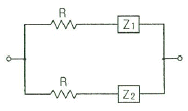
- Z1Z2=R
- Z1Z2=R2
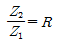
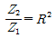
(정답률: 23%)
65. 어떤 콘덴서를 300V로 충전하는데 9[J]의 에너지가 필요하였다. 이 콘덴서의 정전용량은 몇 [㎌]인가?
- 100
- 200
- 300
- 400
(정답률: 28%)
66. 내부 임피던스가 0.3+j2[Ω]인 발전기에 임피던스가 1.7+j3[Ω]인 선로를 연결하여 전력을 공급한다. 부하 임피던스가 몇 Ω일 때 부하에 최대 전력이 전달되는가?
- 1.4-j
- 1.4+j
- 2-j5
- 2+j5
(정답률: 23%)
67.
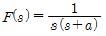
의 라플라스 역변환은?- e-at
- 1-e-at
- a(1-e-at)
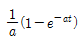
(정답률: 23%)
68. 송전선로에서 전압이3×108[m/s]인 광속으로 전파할 때 200[MHz]인 주파수에 대한 위상정수는 몇 rad/m인가?
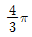
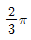
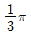
- π
(정답률: 20%)
69. 3상 회로에서 단상 전력계 2개로 전력을 측정하였더니 각 전력계의 값이 각각 301W 및 1327W이었다. 이때의 역률은 약 얼마인가?
- 0.34
- 0.62
- 0.68
- 0.75
(정답률: 23%)
70. DC 12V의 전압을 측정하기 위하여 10V용 전압계 두 개를 직렬로 연결하였을 때 전압계 V1의 지시값은 몇 V인가? (단, 전압계 V1의 내부저항은 8kΩ, V2의 내부저항은 4kΩ이다.)
- 4
- 6
- 8
- 10
(정답률: 22%)
71. 단위 임펄스함수 δ(t)를 변환 하면?
- 1
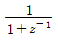
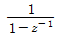
- 1/z
(정답률: 25%)
72. 대역폭(band width)은 과도응답 성질의 한 척도로 사용되는데, 이의 특성으로 알맞은 것은?
- 대역폭이 적으면 비교적 높은 주파수만이 통과한다.
- 대역폭이 크면 시간 응답은 일반적으로 늦고 완만하다.
- 대역폭이 적으면 시간응답은 일반적으로 늦고 완만하다.
- 대역폭이 크면 비교적 낮은 주파수만이 통과한다.
(정답률: 17%)
73. 전달함수 G(jw)=j5w이고, w=0.02일 때 이득[dB]은?
- 20
- 10
- -20
- -10
(정답률: 26%)
74. 특성방정식 s3+Ks2+2s+K+1=0으로 주어진 제어계가 안정하기 위한 K의 범위는?
- K > 0
- K > 1
- -1 < K < 1
- K > -1
(정답률: 23%)
75. 다음 회로에서 출력 전압 V0는? (단, V1, V2, V3는 입력 신호전압이다.)
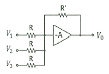
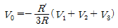
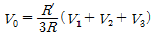
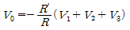
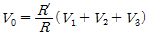
(정답률: 15%)
76. 상태방정식
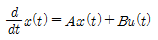
에서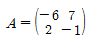
이라면 A의 고유값은?- 1,-8
- 1,-5
- 2,-8
- 2,-5
(정답률: 22%)
77. 단위 부궤환 시스템이
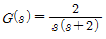
와 같을때, 다음 중 옳은 것은?- 무제동
- 임계제동
- 과제동
- 부족제동
(정답률: 17%)
78. 논리식
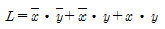
를 간략화한 것은?- x+y
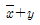
(정답률: 26%)
79. 시퀀스 제어에 관한 설명으로 틀린 것은?
- 시스템이 저가이고 간단하다.
- 제어동작이 출력과 관계없이 오차가 많이 나올 수 있다.
- 입력과 출력간의 오차를 시스템 내부에서 스스로 조절할 수 있다.
- 미리 정해진 순서에 따라 제어가 순차적으로 진행된다.
(정답률: 20%)
80. 인 전달함수를 신호 흐름선도로 표시하면?
(정답률: 25%)
5과목: 전기설비기술기준 및 판단기준
81. 특고압 가공전선로로부터 기설 가공 전화선로에 상시 정전유도장해에 의한 통신상의 장해가 발생하지 않도록 하기 위하여 사용전압이 60[kV]를 초과하는 경우에는 전화선로의 길이 40km마다 유도전류가 몇 [㎂]를 넘지 않아야 하는가?
- 1
- 2
- 3
- 4
(정답률: 29%)
82. 제 1종 특고압 보안공사를 할 때 전선로의 지지물로 사용할 수 없는 것은?
- 철탑
- A종 철근 콘크리트주
- B종 철주
- B종 철근 콘크리트주
(정답률: 25%)
83. 과전류가 생긴 경우에 자동적으로 전로로부터 차단하는 장치만 시설하여도 되는 전력용 커패시터의 뱅크용량[kVA]은?
- 500초과 15000미만
- 500초과 20000미만
- 50초과 15000미만
- 50초과 10000미만
(정답률: 28%)
84. 지선의 설치 목적으로 적합하지 않은 것은?
- 유도장해를 방지하기 위하여
- 지지물의 강도를 보강하기 위하여
- 전선로의 안전성을 증가시키기 위하여
- 불평형 장력을 줄이기 위하여
(정답률: 24%)
85. 1차 전압 22.9kV인 중성점 접지식 전로에 접속하는 변압기 전로의 절연내력 시험 시 최대 사용전압의 몇 배의 전압을 인가하여야 하는가?
- 1.5
- 1.25
- 1.1
- 0.92
(정답률: 21%)
86. 지중 전선로에 있어서 폭발성 가스가 침입할 우려가 있는 장소에 시설하는 지중함은 크기가 몇 이상일 때 가스를 방산시키기 위한 장치를 시설하여야 하는가?
- 0.25
- 0.5
- 0.75
- 1.0
(정답률: 31%)
87. 저압 전로에 사용하는 과전류 차단기로 정격전류 30A의 배선용 차단기에 60A의 전류를 통했을 경우 몇 분 이내에 자동적으로 동작하여야 하는가?(오류 신고가 접수된 문제입니다. 반드시 정답과 해설을 확인하시기 바랍니다.)
- 2
- 6
- 10
- 15
(정답률: 24%)
88. 옥측 또는 옥외에 시설하여서는 안 되는 것은?
- 고압의 이동전선
- 고압의 접촉전선
- 사용전압이 400V 이상인 전구선
- 사용전압이 400V 이상인 저압의 이동전선
(정답률: 15%)
89. 변전소 또는 이에 준하는 곳에는 전기량을 계측하는 장치를 시설하여야 한다. 전기 철도용 변전소의 경우 생략 가능한 것은?
- 특고압용 변압기의 온도를 계측하는 장치
- 주요 변압기의 전류를 계측하는 장치
- 주요 변압기의 전압을 계측하는 장치
- 주요 변압기의 전력을 계측하는 장치
(정답률: 11%)
90. 고압 옥측전선로에 사용할 수 있는 전선은?
- 케이블
- 절연전선
- 다심형 전선
- 나경동선
(정답률: 30%)
91. 고압가공 전선에 경동선을 사용하는 경우 안전율은 얼마 이상이 되는 이도로 시설하여야 하는가?
- 2.0
- 2.2
- 2.5
- 2.6
(정답률: 26%)
92. 지중전선로를 직접매설식에 의하여 시설하는 경우에 매설깊이를 차량 기타 중량물의 압력을 받을 우려가 있는 장소에는 몇 cm 이상으로 하면 되는가?(오류 신고가 접수된 문제입니다. 반드시 정답과 해설을 확인하시기 바랍니다.)
- 40
- 60
- 80
- 120
(정답률: 31%)
93. 특고압을 직접 저압으로 변성하는 변압기 중 시설하여서는 안되는 것은?
- 전기로 등 전류가 큰 전기를 소비하기 위한 변압기
- 발전소, 변전소, 개폐소 또는 이에 준하는 곳의 소내용 변압기
- 사용전압이 100kV 초과인 변압기로서 그 특고압측 권선과 저압측 권선이 혼촉하는 경우 자동 차단장치를 설치한 것
- 교류식 전기 철도용 신호회로에 전기를 공급하기 위한 변압기
(정답률: 19%)
94. 저압 옥내간선에서 분기하는 저압 옥내전로에서 이에 접속되는 하나의 전등수구까지의 전선의 굵기는 4mm2이고 또 기타의 전선의 굵기는 16mm2이다. 저압 옥내전로에 시설하는 과전류 차단기의 용량은 몇 A인가?(오류 신고가 접수된 문제입니다. 반드시 정답과 해설을 확인하시기 바랍니다.)
- 15
- 20
- 30
- 50
(정답률: 10%)
95. 전식 방지를 위한 배류시설에 강제 배류기를 설치하는 경우 배류기 보호를 위해 설치하는 것은?(오류 신고가 접수된 문제입니다. 반드시 정답과 해설을 확인하시기 바랍니다.)
- 과전류 차단기
- 과전압 차단기
- 과부하 계전기
- 과전류 계전기
(정답률: 25%)
96. 백열전등 또는 방전등에 전기를 공급하는 옥내전로의 대지전압은 일반적으로 몇 V이하인가?
- 100
- 150
- 200
- 300
(정답률: 34%)
97. 애자사용 공사의 사용전압이 400V가 넘고 600V 이하인 전압에서 점검할 수 없거나 습기가 존재하는 경우의 전선 상호 간격과, 전선과 조영재와의 간격은 각각 몇 cm 이상인가?
- 전선 상호간격 : 3, 전선과 조영재 간격 : 2.0
- 전선 상호간격 : 6, 전선과 조영재 간격 : 2.5
- 전선 상호간격 : 9, 전선과 조영재 간격 : 3.5
- 전선 상호간격 : 6, 전선과 조영재 간격 : 4.5
(정답률: 17%)
98. 공통접지, 통합접지 공사를 하는 경우 보호도체(PE)의 단면적 계산식은? (단, 차단 시간은 5초 이하이다.)
(정답률: 21%)
99. 가공전선과 첨가 통신선과의 이격거리에서 통신선과 저압 가공전선 또는 특고압 가공전선로의 다중 접지를 한 중성선 사이의 이격거리는 몇 cm 이상인가?
- 60
- 70
- 80
- 90
(정답률: 25%)
100. 가스 계량기 및 가스관의 이음부와 전력량계 및 개폐기의 최소 이격거리는 몇 cm 이상인가?
- 60
- 50
- 40
- 30
(정답률: 15%)